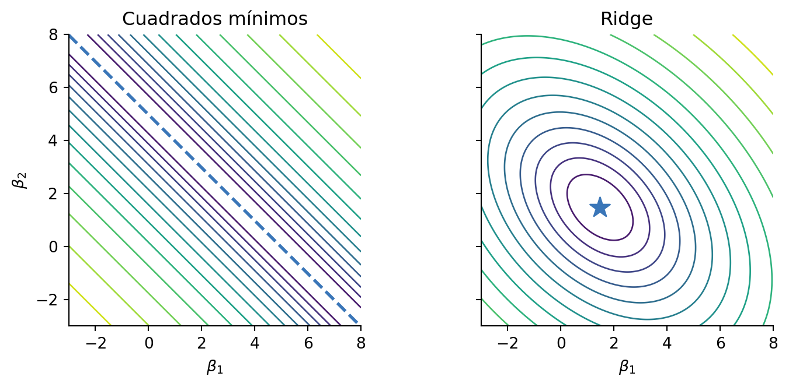
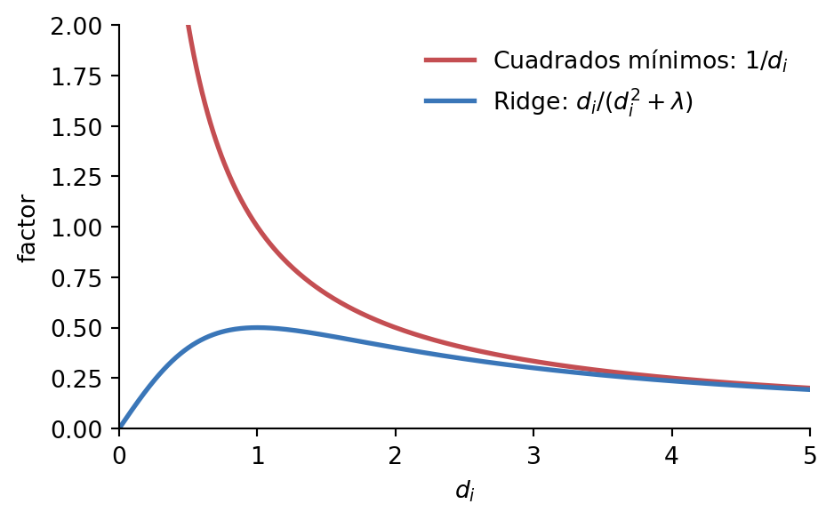
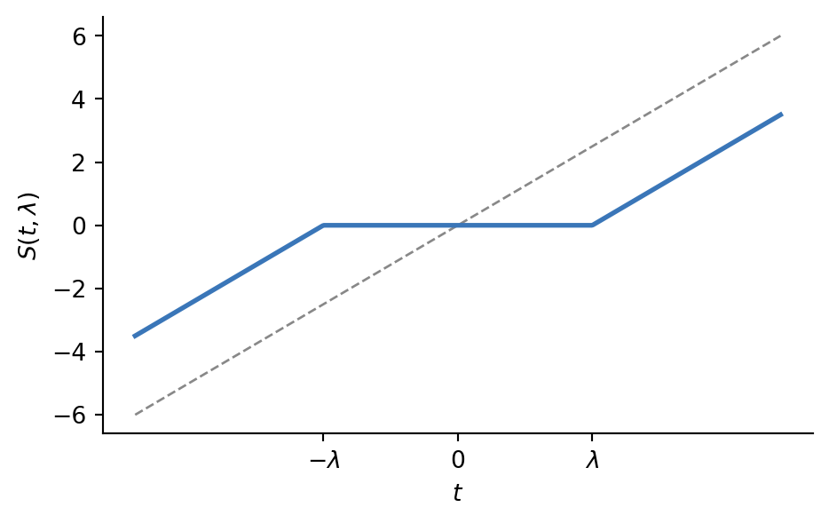

5 Regularización
Las familias de modelos dentro del aprendizaje automático tienden a ser flexibles para acomodar las diversas relaciones que pueden encontrar entre los predictores y las etiquetas. Pero un exceso de flexibilidad puede ser perjudicial, ya que el modelo puede encontrar patrones donde no los hay y terminar aprendiendo del ruido (sobreajuste, como vimos en el Capítulo 4). Por eso, en general hay características de los modelos —hiperparámetros— que podemos ajustar para controlar su flexibilidad. Por ejemplo, en el caso de los árboles de decisión una característica fundamental es la profundidad, pero hay otras, como la cantidad mínima de instancias requeridas para hacer un corte o la cantidad mínima de instancias que tiene que haber en una hoja. Estos hiperparámetros controlan la complejidad del árbol y, por lo tanto, actúan como mecanismos de regularización.
Regularizar es restringir la capacidad del modelo para sobreajustarse a los datos de entrenamiento, con el objetivo de mejorar su generalización sobre datos nuevos. Que un modelo más restringido prediga mejor puede parecer contraintuitivo, pero tiene una justificación en lo que se conoce como el compromiso sesgo-varianza, que veremos más adelante. La regularización es uno de los temas más importantes dentro del aprendizaje automático, ya que es un mecanismo que atraviesa prácticamente todas las familias de modelos. En este capítulo nos concentraremos en regularización en regresión lineal.
5.1 Regularización en regresión lineal
Probablemente la regresión lineal por cuadrados mínimos no parezca un método particularmente flexible. Sin embargo, en muchas situaciones puede tener más flexibilidad de la necesaria:
Cuando el número de instancias \(N\) es similar a la cantidad de predictores \(p\), hay pocos datos para estimar de manera confiable los coeficientes \(\beta\). En el caso extremo, cuando hay más predictores que instancias (más precisamente, \(p + 1 > N\)), no se puede obtener una única solución por cuadrados mínimos, como vimos en el Capítulo 3.
Cuando hay predictores altamente correlacionados entre sí (multicolinealidad), aportan información redundante y los coeficientes quedan mal determinados.
Se ve rápidamente cómo impactan estos casos en la solución de cuadrados mínimos ordinarios (OLS, por sus siglas en inglés), \(\hat{\beta}^{ols} = (\mathbf{X}^T \mathbf{X})^{-1} \mathbf{X}^T \mathbf{y}\). Cuando los predictores están altamente correlacionados, o cuando hay casi tantos predictores como instancias, la matriz \(\mathbf{X}^T \mathbf{X}\) es casi singular y su inversa es muy inestable. Esto lleva a estimaciones poco confiables de los coeficientes: pequeñas modificaciones de los datos pueden dar estimaciones completamente diferentes. En particular, esto se traduce en coeficientes que pueden ser grandes en módulo. Por ejemplo, con dos predictores casi iguales, un coeficiente muy positivo y otro muy negativo se compensan y ajustan casi igual de bien que dos coeficientes moderados. Entonces, una forma de introducir regularización es penalizando el tamaño de los coeficientes en la función de costo. Ésta es la acepción más estricta de regularización. A continuación, veremos dos formas de implementarla.
5.1.1 Regularización Ridge
La regularización Ridge penaliza la suma de los cuadrados de los coeficientes, de la siguiente forma:
\[\hat{\beta}^{ridge} = \arg \min_{\beta} \{\sum_{i=1}^{N} (y_i - \beta_0 - \sum_{j=1}^{p} x_{ij} \beta_j)^2 + \lambda \sum_{j=1}^{p} \beta_j^2\}\]
Notar que la ordenada al origen (\(\beta_0\)) no se penaliza, solo los coeficientes que acompañan a los predictores. Nuevamente, podemos hacer uso de la notación vectorial y matricial para simplificar la expresión
\[\hat{\beta}^{ridge} = \arg \min_{\beta} \{(\mathbf{y} - \mathbf{X} \beta)^T (\mathbf{y} - \mathbf{X} \beta) + \lambda \beta^T \beta\}\]
Esta expresión solamente es correcta si los predictores fueron centrados, es decir, si tienen media cero. En ese caso, \(\hat{\beta}_0 = \bar{y}\), y \(\mathbf{X}\) no lleva la columna de unos que usamos en el Capítulo 3. Además, conviene que los predictores estén estandarizados: la penalización depende del tamaño de los coeficientes, y ese tamaño depende de la escala de cada predictor, así que sin estandarizar la regularización afectaría de forma distinta a cada uno.
En términos de una función de costo, esto se puede escribir como el \(RSS\) penalizado:
\[ RSS_\lambda(\beta) = \|\mathbf{y} - \mathbf{X} \beta\|^2 + \lambda \|\beta\|^2 \]
¿Qué hace la regularización Ridge? La regularización Ridge agrega un término de penalización a la función de costo que es proporcional a la suma de los cuadrados de los coeficientes. Esto tiene el efecto de achicar los coeficientes hacia cero. El parámetro \(\lambda \ge 0\) es un hiperparámetro que controla la cantidad de regularización:
- Si \(\lambda = 0\), entonces el problema se reduce a la regresión lineal ordinaria.
- A medida que \(\lambda\) aumenta, los coeficientes se vuelven más pequeños y el modelo se vuelve más simple.
La solución se obtiene de la misma manera que en cuadrados mínimos: calculando el gradiente, igualando a cero y despejando \(\beta\):
\[ \hat{\beta}^{ridge} = (\mathbf{X}^T \mathbf{X} + \lambda I)^{-1} \mathbf{X}^T \mathbf{y} \]
Notar que ahora hay que invertir \(\mathbf{X}^T \mathbf{X} + \lambda I\), que para \(\lambda > 0\) es siempre invertible, aunque \(\mathbf{X}^T \mathbf{X}\) no lo sea. Por eso, Ridge resuelve los dos problemas que planteamos al principio. Esto también se puede ver en la función de costo (Figura 5.1).
5.1.1.1 Regresión Ridge con SVD
La descomposición en valores singulares ayuda a entender qué hace la regresión Ridge. Si \(\mathbf{X} = U D V^T\), entonces \(\hat{\beta}^{ridge} = (\mathbf{X}^T \mathbf{X} + \lambda I)^{-1} \mathbf{X}^T \mathbf{y}\) puede reescribirse así:
\[\hat{\beta}^{ridge} = (V D U^T U D V^T + \lambda I)^{-1} V D U^T \mathbf{y}\]
Muchos de los términos de esa ecuación se cancelan, ya que \(U^T U = I\) y \(V\) es ortogonal. Al final, queda la expresión
\[\hat{\beta}^{ridge} = V (D^2 + \lambda I)^{-1} D U^T \mathbf{y}\]
Entonces, por un lado teníamos que \(\hat{\beta}^{ols} = V D^{-1} U^T \mathbf{y}\), como vimos en el Capítulo 3, y por el otro \(\hat{\beta}^{ridge} = V (D^2 + \lambda I)^{-1} D U^T \mathbf{y}\).
La única diferencia es que en lugar de \(D^{-1}\) tenemos \((D^2 + \lambda I)^{-1} D\). Ambas son matrices diagonales: en el primer caso, cada elemento es \(1/d_i\), y en el segundo, \(d_i/(d_i^2 + \lambda)\). Para compararlos, podemos calcular su cociente. Como \(d_i\) y \(\lambda\) son no negativos,
\[ \frac{d_i / (d_i^2 + \lambda)}{1 / d_i} = \frac{d_i^2}{d_i^2 + \lambda} \leq 1 \]
Es decir, Ridge achica cada dirección, pero no a todas por igual. Si \(d_i^2\) es mucho mayor que \(\lambda\), el cociente es cercano a uno y casi no hay cambio. Si \(d_i^2\) es mucho menor que \(\lambda\), el cociente es cercano a cero y la dirección se achica mucho. Los valores singulares chicos, en relación con el más grande, son justamente los que aparecen con la multicolinealidad: en cuadrados mínimos, el término \(1/d_i\) se vuelve enorme, mientras que Ridge lo mantiene acotado (Figura 5.2).

5.1.2 Regularización Lasso
En lugar de penalizar los coeficientes al cuadrado, como en la regresión Ridge, la regresión Lasso penaliza la suma de los valores absolutos de los coeficientes:
\[ \hat{\beta}^{lasso} = \arg \min_{\beta} \{\sum_{i=1}^{N} (y_i - \beta_0 - \sum_{j=1}^{p} x_{ij} \beta_j)^2 + \lambda \sum_{j=1}^{p} |\beta_j|\}\]
Esa diferencia en la penalización cambia la forma de entrenar el modelo: como el valor absoluto no es derivable en cero, la función de costo deja de ser diferenciable en todos los puntos donde algún coeficiente vale cero, y ya no hay una solución cerrada como la de Ridge. Hay dos formas principales de entrenar el modelo Lasso:
Coordinate descent: es un algoritmo iterativo que optimiza los coeficientes de a uno. En cada paso, minimiza la función de costo con respecto a un único coeficiente, manteniendo los demás fijos. Este proceso se repite hasta que los cambios en los coeficientes son pequeños. Es la forma por defecto de entrenar el modelo Lasso en muchas implementaciones.
Least-angle regression (LARS): este es un algoritmo que construye el modelo Lasso de manera eficiente. Comienza con todos los coeficientes en cero y agrega variables al modelo de manera secuencial, ajustando los coeficientes a medida que avanza.
Vamos a ver cómo es coordinate descent, pero no lo vamos a justificar.
5.1.2.1 Coordinate descent
Para entender coordinate descent, conviene entender antes la función soft-thresholding:
\[ S(t, \lambda) = \operatorname{sign}(t) \, (|t| - \lambda)_{+} = \operatorname{sign}(t) \max(0, |t| - \lambda) \]
donde \((z)_{+} = \max(0, z)\) es la parte positiva de \(z\).

Lo que hace la función soft-thresholding es achicar \(t\) hacia cero: si \(|t| \leq \lambda\), lo lleva exactamente a cero, y si \(|t| > \lambda\), le resta \(\lambda\) a su valor absoluto (Figura 5.3). Esta operación es la que permite que Lasso lleve algunos coeficientes exactamente a cero.
Volviendo a Lasso, por simplicidad vamos a asumir que todos los predictores están estandarizados y que la variable de salida está centrada, así podemos omitir \(\beta_0\). Además, separamos en la función de costo la contribución de \(\beta_j\) de la del resto de los coeficientes \(\beta_k\):
\[ \hat{\beta}^{lasso} = \arg \min_{\beta} \{\sum_{i=1}^{N} (y_i - \sum_{k \neq j} x_{ik} \beta_k - x_{ij} \beta_j)^2 + \lambda \sum_{k \neq j} |\beta_k| + \lambda |\beta_j|\}\]
Para actualizar \(\beta_j\):
- Partimos de una estimación \(\tilde{\beta}_k\) de los demás coeficientes. Puede ser cero, aleatoria o el resultado de un cálculo previo, por ejemplo de cuadrados mínimos o de Ridge.
- Fijamos todos los coeficientes excepto \(\beta_j\).
La función de costo queda entonces
\[R( \tilde{\beta}, \beta_j) = \sum_{i=1}^{N} (y_i - \sum_{k \neq j} x_{ik} \tilde{\beta}_k - x_{ij} \beta_j)^2 + \lambda \sum_{k \neq j} |\tilde{\beta}_k| + \lambda |\beta_j| \]
El término \(y_i - \sum_{k \neq j} x_{ik} \tilde{\beta}_k\) es el residuo parcial quitando la contribución de \(\beta_j\). Esto es un problema de Lasso univariado, que se puede resolver de forma analítica, y cuya solución es:1
\[ \hat{\beta}_j = S\left(\frac{1}{N} \sum_{i=1}^{N} x_{ij} (y_i - \sum_{k \neq j} x_{ik} \tilde{\beta}_k), \lambda\right) \]
Para resolver el Lasso multivariado, entonces, basta con iterar por cada variable, actualizando su coeficiente según la fórmula anterior, y usando los valores más recientes de los otros coeficientes, hasta convergencia.
Para llegar a esta expresión, conviene multiplicar la función de costo por \(\frac{1}{2N}\), lo que no cambia su mínimo. Esa constante queda absorbida en \(\lambda\): el \(\lambda\) de esta fórmula equivale a \(\lambda / (2N)\) en la definición de Lasso.↩︎